Contents
MyMainScript
clc; clear all; close all; warning('off', 'all'); tic;
CS 663: Digital Image Processing, IIT Bombay (Autumn 2020)
Aman Kansal, Ansh Khurana, Kushagra Juneja
Assignment 1
Q1: Image resizing and rotation
Implementation of the necessary functionalities can be found in the corresponding Matlab functions 'myShrinkImageByFactorD', 'myBicubicInterpolation', 'myBilinearInterpolation', 'myBilinearInterpolation' and 'myImageRotation'
Code for Q1.a
% Original circles image im1 = imread("../data/circles_concentric.png"); displayLockedAspectRatio(im1, "Original circles image", '1a_original_circles'); % Subsampled by 2 circles image circles2 = myShrinkImageByFactorD(im1, 2); displayLockedAspectRatio(circles2, "Circles image subsampled by 2", '1a_circles_shrink_f2'); % Subsampled by 3 circles image circles3 = myShrinkImageByFactorD(im1, 3); displayLockedAspectRatio(circles3, "Circles image subsampled by 3", '1a_circles_shrink_f3'); toc;
Elapsed time is 2.879761 seconds.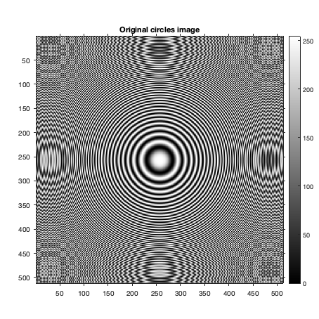 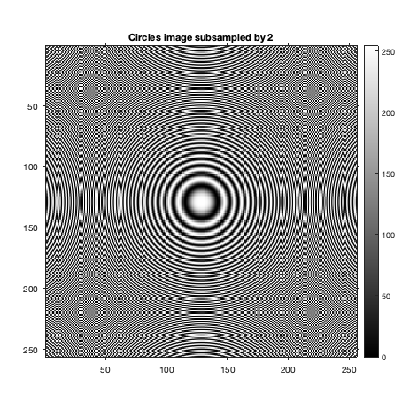 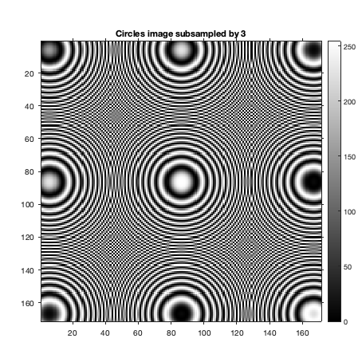
Code for Q1.b,c,d
Original barbara image
im2 = imread("../data/barbaraSmall.png"); displayLockedAspectRatio(im2, "Original image", '1b_barbara_original'); barbaraBilinear = myBilinearInterpolation(im2, 3, 2); displayLockedAspectRatio(barbaraBilinear, "Bilinear Interpolated image", '1b_barbara_bilinear'); % Nearest Neighbor Interpolation barbaraNN = myNearestNeighborInterpolation(im2); displayLockedAspectRatio(barbaraNN, "Nearest Neighbor Interpolated image", '1c_barbara_nearest_neighbour'); %Interpolated image barbaraBicubic = myBicubicInterpolation(im2, 3, 2); displayLockedAspectRatio(barbaraBicubic, "Bicubic Interpolation", '1d_barbara_bicubic'); toc;
Elapsed time is 6.167400 seconds.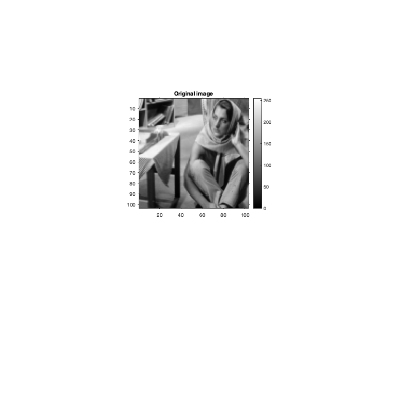 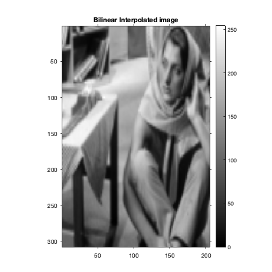 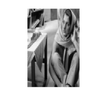 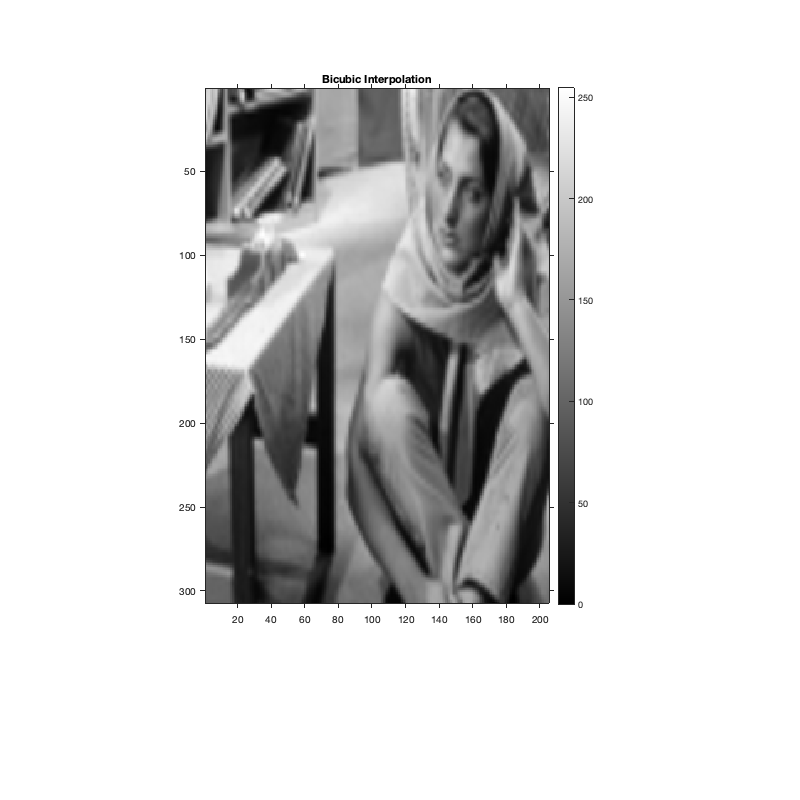
Code for Q1.e
Here we take a small crop out of the image of the size 40x40. Since Nearest Neighbour interpolation assigns the value at a point in the domain of the function to its nearest neighbour at which the value is known, NN interpolation results in a pixelated image with discontinuities. (A small patch would be assigned the same value based on distance) Bilinear and Bicubic interpolation techniques result in a more smoother approximation and less pixelation in the input. Within the two techniques, Bicubic interpolation produces a smoother output due to consistency in the first derivatives as well. This can be seen in a more gradual transition from blue to green in the top right region.
X_MIN=1; X_MAX = 41; Y_MIN = 120; Y_MAX = 161; bilinear_crop = barbaraBilinear(X_MIN:X_MAX, Y_MIN:Y_MAX); bicubic_crop = barbaraBicubic(X_MIN:X_MAX, Y_MIN:Y_MAX); nn_crop = barbaraNN(X_MIN:X_MAX, Y_MIN:Y_MAX); displayJet(bilinear_crop, "Small crop of bilinear interpolation output", '1e_barbara_bilinear_crop'); displayJet(bicubic_crop, "Small crop of bicubic interpolation output", '1e_barbara_bicubic_crop'); displayJet(nn_crop, "Small crop of nearest neighbour interpolation output", '1e_barbara_nn_crop'); toc;
Elapsed time is 8.664039 seconds.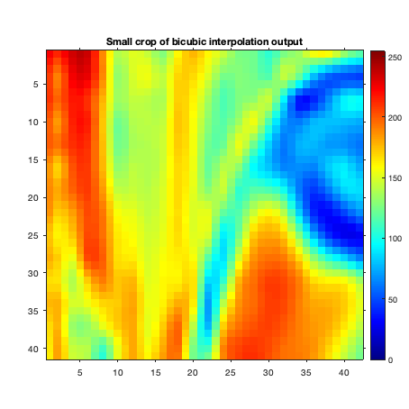 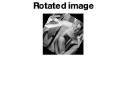
Code for Q1.f
Original barbara image
im2 = imread("../data/barbaraSmall.png"); displayLockedAspectRatio(im2, "Original image", '1f_barbara_small_original'); %Rotated image barbaraRotated = myImageRotation(im2, 30); displayLockedAspectRatio(barbaraRotated, "Rotated image", '1f_barbara_small_rotated'); toc;
Elapsed time is 10.415709 seconds.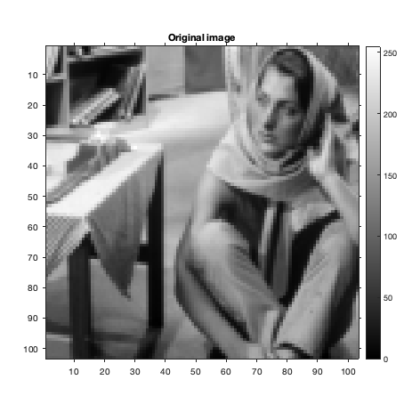 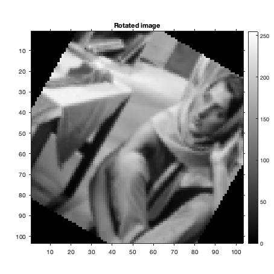